Introduction
Literature Review
Early research on cardiovascular risk prediction relied on population studies. The Framingham Risk Score showed that blood pressure and cholesterol categories could predict coronary heart disease. Later, the Reynolds Risk Score introduced new biomarkers. It included high-sensitivity C-reactive protein and family history. This addition improved risk classification for women.These scoring systems remain important in clinical practice. However, they rely on fixed categories and linear models. They cannot capture the complex and nonlinear interactions between many risk factors. Consequently, there is an urgent need for more accurate and interpretable prediction models.
Supervised machine learning. extends beyond traditional regression approaches. These methods learn directly from labeled data. Support Vector Machines (SVMs) create strong classification boundaries in high-dimensional spaces. Ensemble methods, such as Random Forests and Gradient Boosting models (XGBoost, LightGBM, CatBoost), often outperform single classifiers on heart-disease datasets. These models capture nonlinear patterns and interactions between features. Neural networks, especially Convolutional Neural Networks (CNNs), were first developed for image recognition. They are now adapted to analyze ECG signals and other physiological data for cardiac prediction.
Unsupervised methods. also assist researchers in identifying hidden patterns without using outcome labels. K-means clustering divides patient groups into subgroups that share similar characteristics. These clusters can reveal distinct cardiovascular phenotypes. Hierarchical clustering produces tree-like structures of subgroups. This approach is often highly interpretable in clinical practice. Dimensionality reduction methods, such as PCA and t-SNE, are also applied to cardiovascular data. They enable the visualization of risk profiles and uncover structure in high-dimensional features. These methods support exploratory risk stratification and provide insights that can guide feature engineering for supervised models.
Dataset Description
The dataset is taken from Kaggle’s Heart Attack Prediction Dataset. It includes patient demographics, medical history, lifestyle factors, and socioeconomic indicators. The target variable is Heart Attack Risk, labeled as high or low risk.
Problem Definition
Problem
Heart attacks remain one of the leading causes of morbidity and mortality worldwide, accounting for millions of deaths each year. Despite advances in clinical diagnosis, many patients still lack timely risk assessment before symptoms appear, resulting in missed opportunities for early intervention. Traditional approaches, such as the Framingham Risk Score, rely heavily on limited clinical indicators (e.g., blood pressure, cholesterol) and physician expertise. However, these factors are insufficient to capture the complex interactions among medical, lifestyle, and socioeconomic factors.
Motivation
To effectively reduce the incidence and mortality of heart attacks, it is urgent to establish a data-driven prediction method that can integrate medical indicators, lifestyle factors, and socioeconomic environments to classify and predict patients’ risk of heart attacks. Machine learning provides an effective solution, as it can capture complex and nonlinear relationships among heterogeneous features. Such predictive models can support early diagnosis, enable personalized interventions, and ultimately assist healthcare providers in making informed clinical decisions.
Methods
Data Preprocessing
Data preprocessing was automated to ensure data consistency and improve model performance. The pipeline included blood pressure feature splitting, categorical encoding, and log transformations for skewed variables. A multi-scale feature scaling strategy was applied, comparing the performance of StandardScaler, RobustScaler, and MinMaxScaler to enhance model stability and convergence across different algorithms.
Heart Attack Risk Triage
Unsupervised learning methods were implemented to perform heart attack risk triage and uncover hidden structure within the dataset. The main objective was to identify subgroups of patients who share similar medical and lifestyle characteristics, providing a data-driven view of heart attack risk stratification.
Three clustering algorithms were applied to achieve robust and diverse grouping outcomes: K-Means, Gaussian Mixture Model (GMM), and DBSCAN (Density-Based Spatial Clustering of Applications with Noise). These methods were selected to capture different types of data distributions — K-Means for compact spherical clusters, GMM for probabilistic soft clustering, and DBSCAN for discovering irregular shapes and outliers.
Heart Attack Risk Classification
Supervised learning methods were employed for heart attack risk classification. Two nonlinear ensemble models, Random Forest and XGBoost, were implemented to perform binary prediction of high- and low-risk patients.
Both models were chosen for their ability to capture complex nonlinear interactions between medical, demographic, and lifestyle features, which are often missed by traditional linear classifiers. Extensive feature engineering and scaling were conducted prior to model training to ensure consistency across predictors.
To address class imbalance in the dataset, the SMOTE (Synthetic Minority Oversampling Technique) algorithm was applied, generating synthetic samples for underrepresented classes and ensuring balanced representation between minority and majority groups. This approach enhanced model generalization and reduced bias toward the dominant class.
Cluster-Augmented Supervised Learning
We extended the supervised pipeline by incorporating unsupervised cluster assignments as additional predictive features. Cluster labels generated from KMeans, GMM, and DBSCAN were appended to the original dataset, resulting in three augmented versions of the data. For each augmented dataset, two supervised models—Random Forest and XGBoost—were trained, producing a total of six experiments. The full workflow includes preprocessing, train/test split, model training, and hyperparameter tuning (Grid Search).
Random Forest tuning explored: n_estimators, max_depth, min_samples_split, max_features.
XGBoost tuning explored: max_depth, learning_rate, subsample, colsample_bytree, n_estimators.
This mixed modeling strategy investigates whether latent structural information extracted from clustering can enhance downstream supervised prediction performance.
Results and Discussion
Metrics
Unsupervised Model Metrics
To identify the most stable cluster configuration, an optimal cluster analysis was performed using automated k-value optimization across multiple internal validation metrics. The Elbow method and the Silhouette Score curve helped determine the appropriate number of clusters for K-Means by balancing compactness and separation.
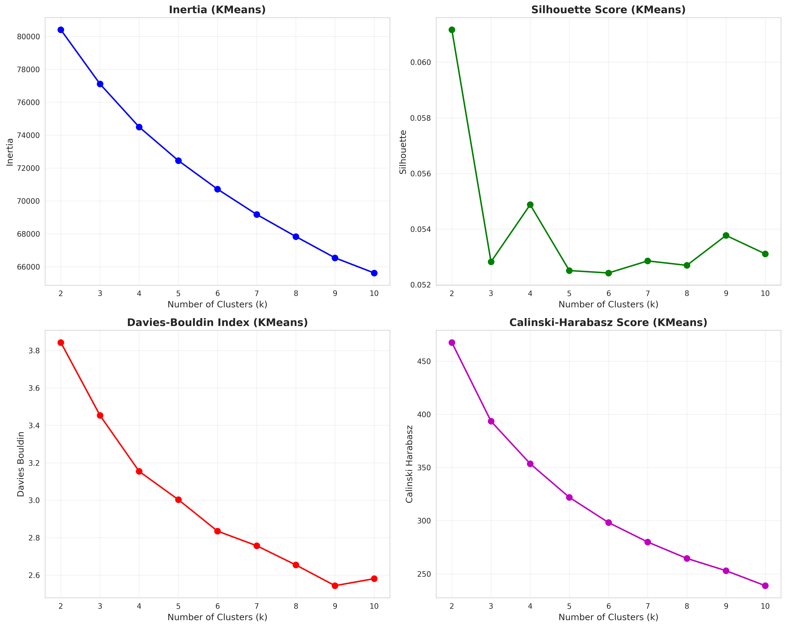
After selecting the optimal k, a comprehensive comparison was made across K-Means, GMM, and DBSCAN algorithms. Evaluation metrics such as the Silhouette Score, Davies–Bouldin Index, and Calinski–Harabasz Score were used to assess clustering quality from multiple perspectives. This analysis demonstrated that K-Means achieved the best balance between cohesion and separation, providing interpretable and consistent subgroup structures.
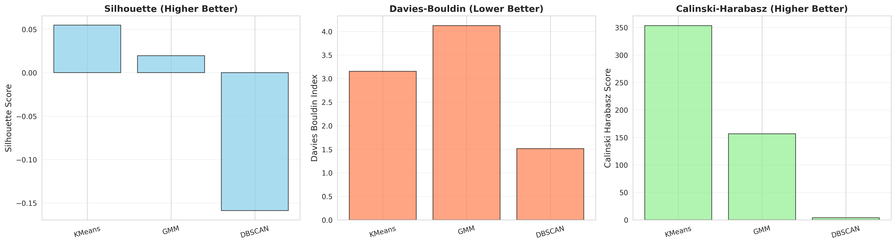
Supervised Model Metrics
To evaluate model robustness, hyperparameter tuning experiments were conducted for both Random Forest and XGBoost classifiers. Validation accuracy was tracked across different parameter configurations to identify optimal depth and estimator settings.
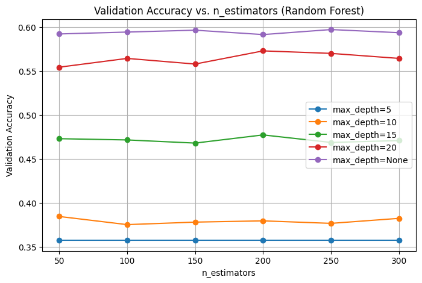
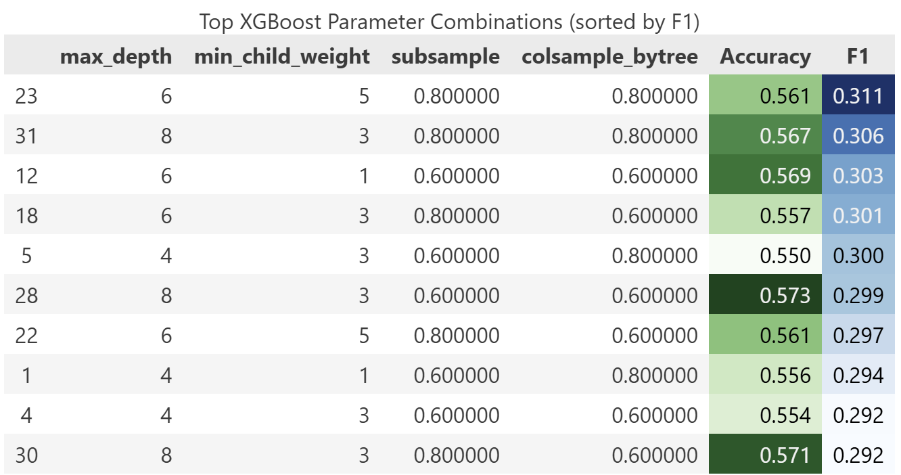
Cluster-Augmented Supervised Learning
All cluster-augmented supervised models were evaluated using multiple complementary metrics. General classification performance was measured using Accuracy, Precision, Recall, and F1-score. ROC-AUC was used to assess the model’s ranking ability, while the Confusion Matrix visualized class-level prediction behavior. Hyperparameter optimization quality for XGBoost and Random Forest was evaluated using grid-search validation AUC heatmaps.
Results
Unsupervised Model Results
After identifying the optimal number of clusters, we analyzed the resulting subgroup structures using multiple visualization techniques. These plots help interpret the underlying relationships between medical, lifestyle, and socioeconomic factors that contribute to different heart attack risk profiles.

To better understand cluster characteristics, feature-level visualizations were generated. The feature heatmap below displays standardized feature means across each K-Means cluster, highlighting differences in lifestyle and clinical indicators such as smoking habits, exercise hours, and blood pressure.
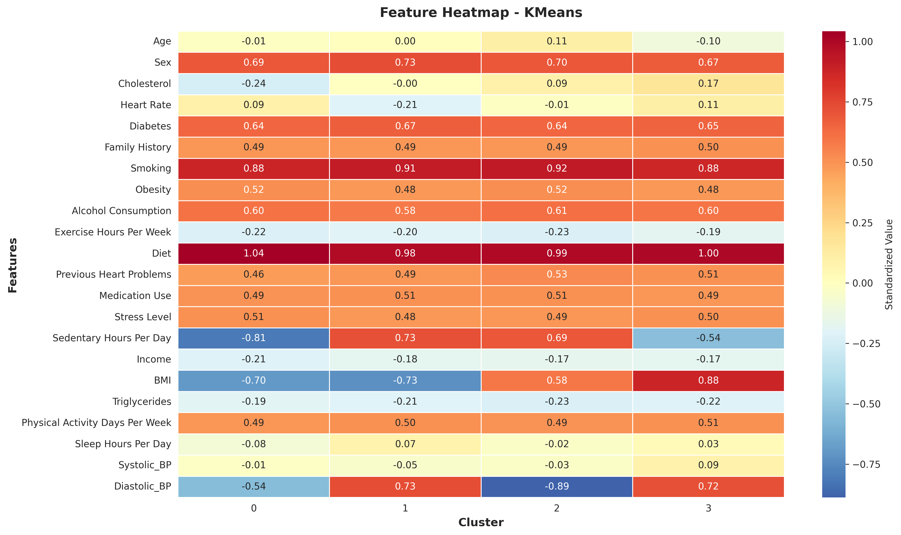
We also examined the overall risk distribution and sample composition within each cluster. The following plots illustrate that each cluster maintains a balanced number of samples, while the proportion of high-risk individuals varies slightly across groups.
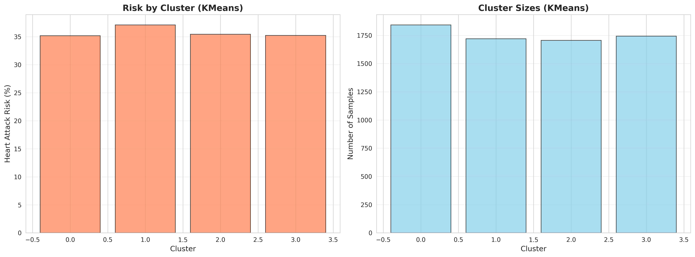
Finally, a radar chart comparison was conducted to visualize multidimensional feature differences among clusters. The results show that certain clusters are characterized by higher stress levels, lower exercise frequency, and increased alcohol consumption, indicating different behavioral risk patterns among patients.
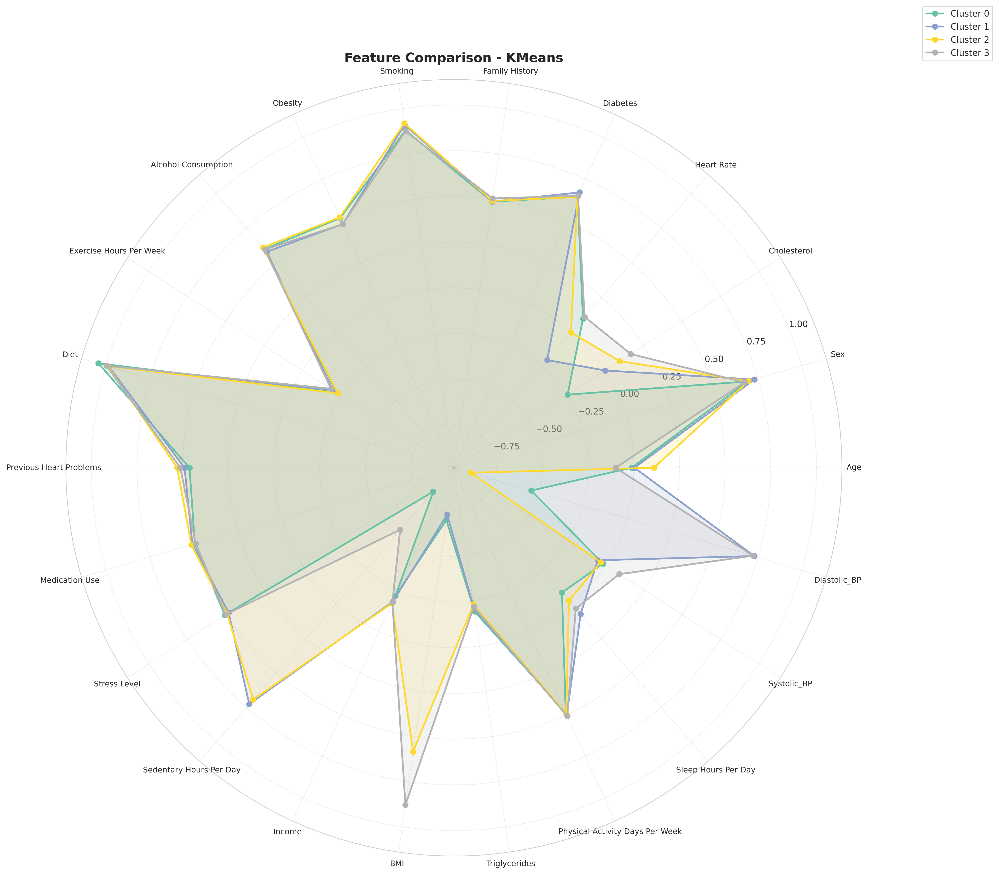
Supervised Model Results
The final evaluation was performed on the test set using the optimized models. The confusion matrices below summarize the classification outcomes for high- and low-risk predictions. Both Random Forest and XGBoost achieved moderate overall accuracy, with XGBoost showing slightly better class balance.
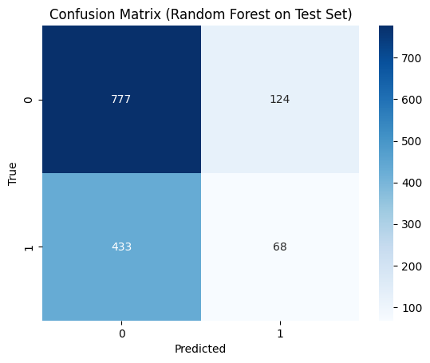
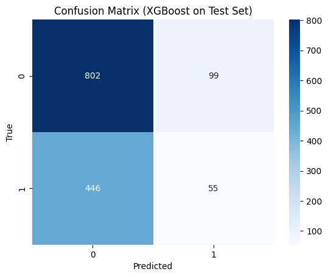
Cluster-Augmented Supervised Learning Results
To evaluate whether unsupervised structure can enhance supervised prediction, we trained Random Forest and XGBoost models on cluster-augmented datasets. Cluster labels from K-Means, GMM, and DBSCAN were appended as additional features, and the same supervised pipeline was applied to each variant. Below we first present a detailed example using the K-Means–augmented dataset with XGBoost, followed by a summary of all six models.
1. Workflow Example: K-Means + XGBoost
We begin by examining the correlation structure of the augmented dataset. The correlation heatmap shows that most features, including the cluster label and Heart_Attack_Risk, have very weak linear relationships with each other. This highlights the difficulty of the prediction task and suggests that nonlinear models are necessary to capture useful interactions.
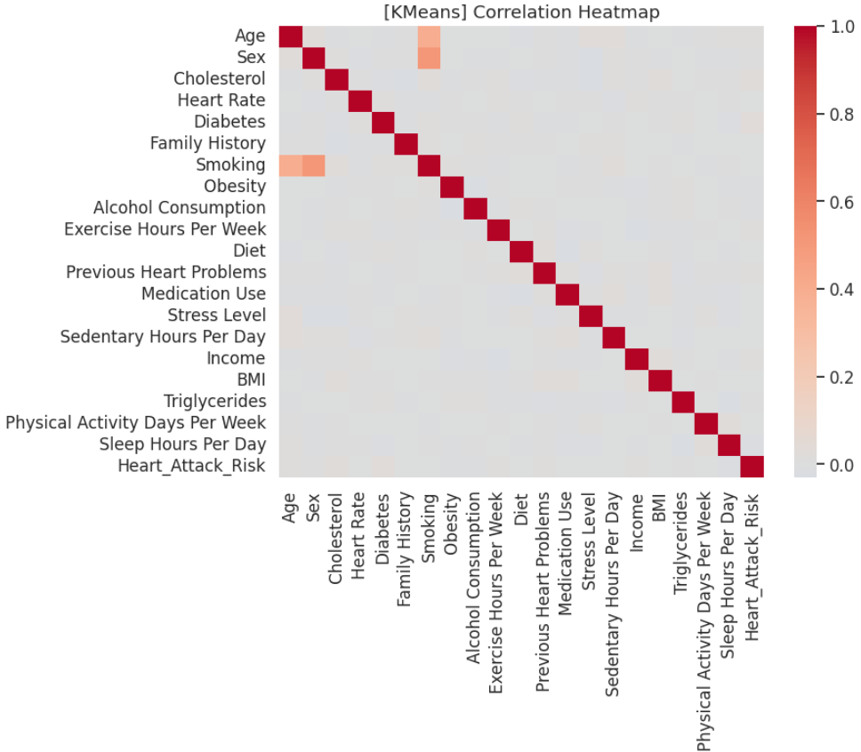
Next, we visualize the data in a two-dimensional PCA space. When points are colored by the true labels, high-risk and low-risk patients are heavily overlapped, confirming that the classes are not linearly separable in the reduced space.
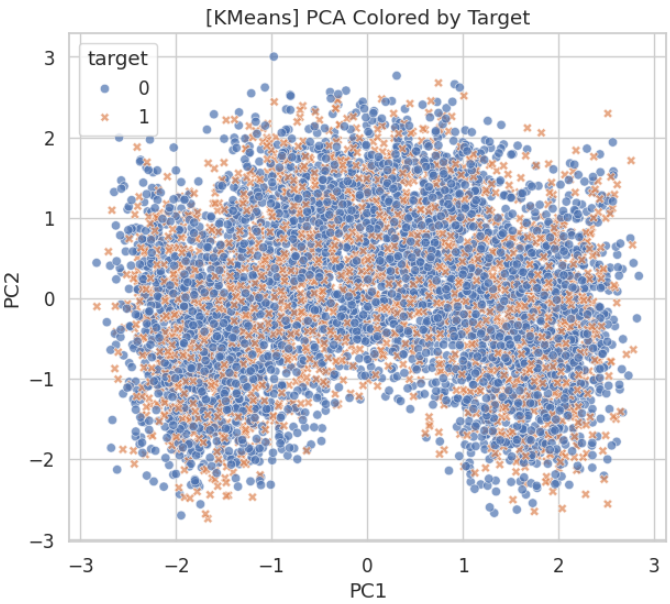
When the same PCA projection is colored by cluster labels, we observe clear regions associated with different K-Means clusters. This indicates that clustering discovers meaningful latent structure in the data, even though this structure does not perfectly align with the target labels.
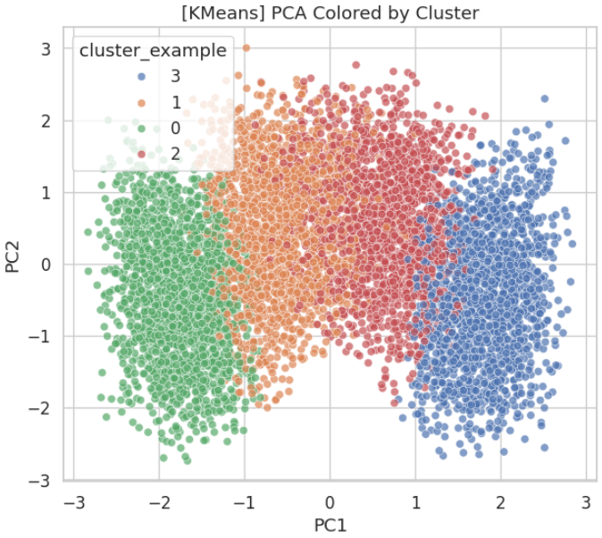
Hyperparameters for the K-Means + XGBoost model were tuned using grid search.
The heatmap below reports validation ROC-AUC for different combinations of
max_depth and learning_rate, with the best configuration
achieving an AUC of approximately 0.515.
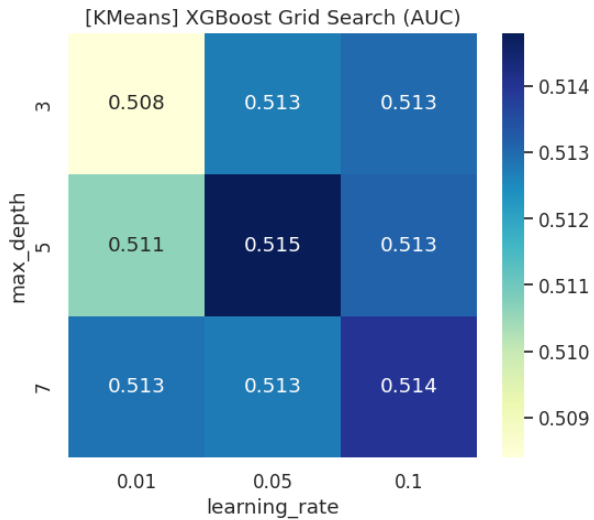
max_depth and learning_rate combinations.2. Classification Performance (K-Means + XGBoost)
The final K-Means + XGBoost model was evaluated on a held-out test set. The table below summarizes its classification report.
| Class | Precision | Recall | F1-score | Support |
|---|---|---|---|---|
| 0 | 0.65 | 0.93 | 0.76 | 901 |
| 1 | 0.41 | 0.09 | 0.14 | 501 |
| Accuracy | 0.63 | 1402 | ||
| Macro Avg | 0.53 | 0.51 | 0.45 | 1402 |
| Weighted Avg | 0.56 | 0.63 | 0.54 | 1402 |
The model achieves strong performance on the majority class (class 0) but struggles to correctly identify high-risk patients (class 1), leading to low recall and F1-score for the positive class.
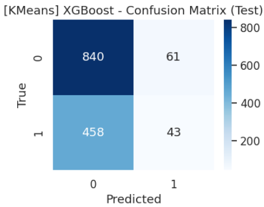
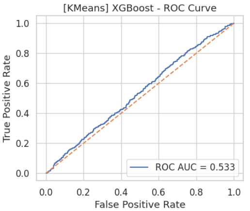
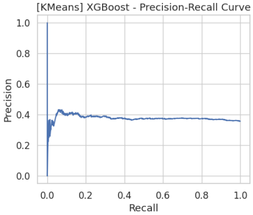
Finally, we inspect feature importances to understand how the model uses the augmented information.
The Cluster variable appears as the second most important feature, suggesting that
K-Means assignments capture useful latent structure that complements the original medical
and lifestyle variables.
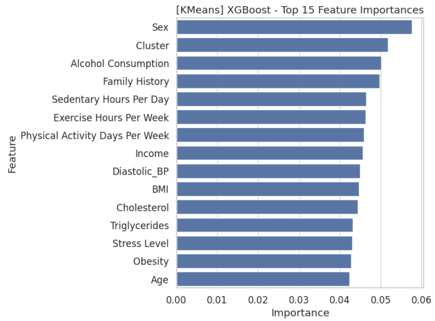
3. Summary of All Cluster-Augmented Models
We trained six supervised models on cluster-augmented datasets using K-Means, GMM, and DBSCAN labels. The table below summarizes test accuracy, F1-score, and ROC-AUC for each model.
| Dataset | Model | Test ACC | Test F1 | Test AUC |
|---|---|---|---|---|
| KMeans | RandomForest | 0.636234 | 0.034091 | 0.499588 |
| KMeans | XGBoost | 0.629815 | 0.142149 | 0.533038 |
| GMM | RandomForest | 0.641227 | 0.003960 | 0.504390 |
| GMM | XGBoost | 0.624108 | 0.151369 | 0.523867 |
| DBSCAN | RandomForest | 0.642653 | 0.000000 | 0.507460 |
| DBSCAN | XGBoost | 0.619829 | 0.119008 | 0.520043 |
Compared to baseline supervised models trained without cluster information, cluster-augmented models achieve modest but consistent improvements in overall accuracy. For Random Forest, the best configuration (GMM + Random Forest) increases accuracy from 0.6027 to 0.6412, an absolute gain of approximately +3.9%. For XGBoost, the best configuration (K-Means + XGBoost) raises accuracy from 0.6113 to 0.6298, corresponding to an absolute improvement of about +1.9%. However, ROC-AUC and F1-scores for the positive class remain relatively low, indicating that class imbalance and overlapping feature distributions are still major challenges for high-risk patient detection.
References
- [1] Wilson, P. W., et al. (1998). Prediction of coronary heart disease using risk factor categories. Circulation, 97(18), 1837–1847.
- [2] Ridker, P. M., et al. (2007). Development and validation of improved algorithms for the assessment of global cardiovascular risk in women: the Reynolds Risk Score. JAMA, 297(6), 611–619.
- [3] Hearst, M. A., et al. (1998). Support vector machines. IEEE Intelligent Systems and their Applications, 13(4), 18–28.
- [4] Dorogush, A. V., et al. (2017). Fighting biases with dynamic boosting. arXiv:1706.09516.
- [5] O'Shea, K., & Nash, R. (2015). An Introduction to Convolutional Neural Networks. arXiv:1511.08458.
- [6] MacQueen, J. (1967). Multivariate observations. Proceedings of the 5th Berkeley Symposium on Mathematical Statistics and Probability, 1, 281–297.
- [7] World Health Organization. (2021). Cardiovascular diseases (CVDs).
- [8] D'Agostino, R. B., et al. (2008). General cardiovascular risk profile for use in primary care: The Framingham Heart Study. Circulation, 117(6), 743–753.
5. Contribution Table
| Name | Contributions |
|---|---|
| Jiahui Zhang | Authored the Introduction/Background and literature review sections during the proposal phase and set up the initial project repository. Revised and finalized the entire midterm report, created the contribution table, GitHub Page, and project Gantt chart, and coordinated integration of all team components. Refined and consolidated the full final report, ensured stylistic consistency across sections, and completed the final editing and documentation for submission. |
| Qinxuan Li | Developed the Problem Definition section and contributed to the literature review during the proposal stage. Implemented supervised learning models, generated evaluation metrics and visualizations, and completed the Cluster-Augmented Supervised Learning Results section for the midterm. Enhanced supervised and mixed-method analyses for the final report, updated model interpretations, and polished technical explanations and results. |
| Jiannan Huang | Prepared the Methods section and assisted with project coordination during the proposal phase. Conducted extensive model evaluation and performance analysis for the midterm, interpreted experiment outcomes, and delivered the midterm presentation. Strengthened the analytical discussion for the final report, refined cross-method comparisons, and ensured conclusions were clearly supported by empirical findings. |
| Jialuo Li | Created presentation materials and managed video recording and upload tasks for the proposal milestone. Designed and implemented the visualization framework for the midterm, producing consistent and clear plots across supervised, unsupervised, and mixed analyses. Refined all visual assets for the final report, improved plot readability, and contributed to preparing the final presentation materials. |
| Binfei Ji | Wrote the Results and Discussion sections and created the initial project page during the proposal stage. Implemented unsupervised learning models for the midterm, generated clustering metrics and visualizations, and analyzed cluster-level patterns. Expanded unsupervised and mixed-method insights for the final report, refined cluster interpretations, and strengthened exploratory analysis sections. |